หารกัน (HanGun)
แอปหารบิลทริปที่จบครบ loop — สร้าง Project, สแกน QR เข้าร่วม, ลงบิล แล้วรู้เลยว่าใครโอนใคร พร้อมลดทอนหนี้ให้โอนน้อยที่สุด สร้างเป็น full-stack app ด้วย Next.js 16 + Supabase
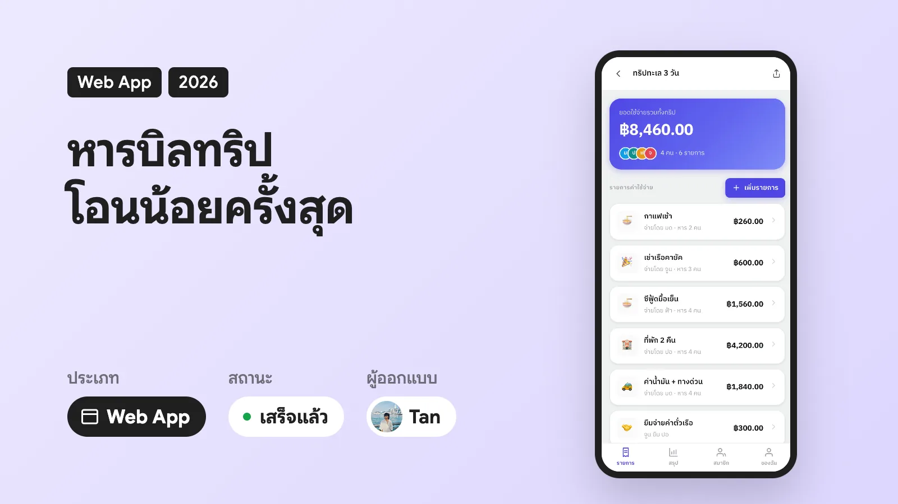
แอปหารบิลทริปกับเพื่อน — สร้าง Project, ชวนเพื่อนสแกน QR เข้าร่วม, บันทึกค่าใช้จ่าย แล้วระบบบอกเลยว่าใครต้องโอนเงินคืนใครเท่าไหร่ พร้อมลดทอนหนี้ให้โอนน้อยครั้งที่สุด
ปัญหาที่เจอ
ทำไมการหารบิลทริปถึงปวดหัวทุกครั้ง?
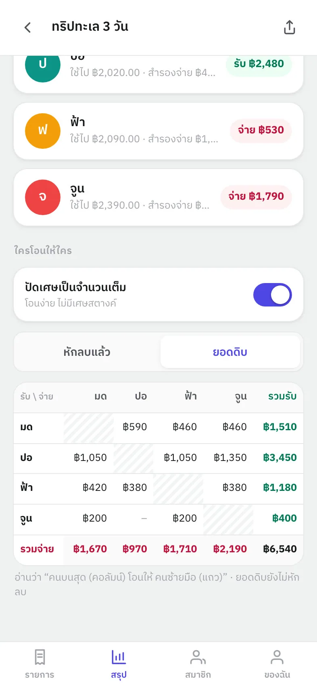
ทริปจบแล้วแต่บิลยังไม่จบ — คนนึงจ่ายค่าที่พัก อีกคนจ่ายค่ารถ อีกคนจ่ายค่าข้าว มื้อนี้มาไม่ครบ มื้อนั้นบางคนไม่กินเหล้า สุดท้ายต้องนั่งคิดเลขในแชต แล้วก็ยังโอนกันวุ่นไปมา
จบทริปแล้วงง — ใครออกบิลไหนไปบ้าง
ค่าใช้จ่ายกระจายอยู่ในหัวของแต่ละคน ไม่มีที่จดรวม พอจะเคลียร์เงินก็จำกันไม่ได้ว่าใครจ่ายอะไรไปเท่าไหร่
หารไม่เท่ากัน คิดมือพลาดบ่อย
บางมื้อมาไม่ครบ บางคนไม่กินเหล้า บางบิลเป็นหนี้ส่วนตัวคนเดียว — หารเท่ากันทื่อ ๆ ไม่ได้ ต้องคิดแยกทีละรายการ
คิดเสร็จแล้ว แต่โอนกันวุ่น
A ติด B, B ติด C, C ติด A — ทั้งที่จริงหักลบกันแล้วโอนแค่ไม่กี่ครั้งก็จบ แต่ไม่มีใครคำนวณตรงนั้นให้
ทวงเงินในแชต ไม่มีหลักฐาน
ใครโอนแล้ว ใครยังค้าง ต้องไล่เลื่อนหาสลิปในแชตกลุ่ม ยอดที่ค้างก็ไม่เคยอัปเดตให้เห็นชัด ๆ
แอปหารบิลส่วนใหญ่ต้องสมัครสมาชิก
กว่าจะชวนเพื่อนครบทุกคน ต้องให้ทุกคนโหลดแอป สมัคร ยืนยันอีเมล — เพื่อนหลายคนถอดใจตั้งแต่ขั้นนี้
วิธีแก้ปัญหา
1 ลิงก์ 1 QR — เข้าร่วมได้ทันที ไม่ต้องสมัคร แล้วให้ระบบคิดเลขแทน
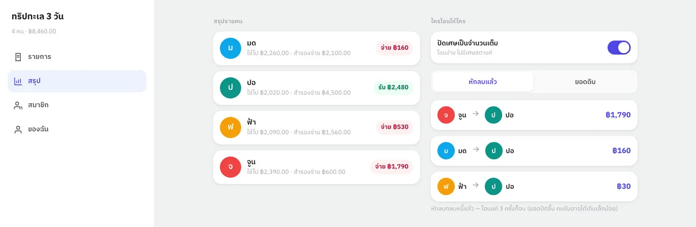
Project เดียว แชร์ QR — เข้าร่วมใน 10 วินาที
เจ้าของสร้าง Project แล้วได้ QR/ลิงก์ เพื่อนสแกนเข้ามา กรอกชื่อ ก็เป็นสมาชิกแล้ว — ไม่มีหน้า Login ไม่มีอีเมลให้ยืนยัน
หาร 3 โหมดในที่เดียว
หารเท่ากัน / กำหนดเองรายคน / หนี้ส่วนตัว — ครอบคลุมทุกแบบบิลในทริปจริง ระบบกระจายเศษสตางค์ให้ครบบาท ไม่มีตกหล่น
Transfer Matrix หักลบหนี้อัตโนมัติ
สลับดูได้ทั้ง "ยอดดิบ" และ "หักลบแล้ว" — ระบบลดทอนหนี้ให้เหลือจำนวนการโอนน้อยที่สุดที่ทุกคนเคลียร์กันจบ
ทุกคนมี QR รับเงินในโปรไฟล์
ตอนเข้าร่วมต้องอัปรูป QR พร้อมเพย์ของตัวเอง — พอจะโอนคืนใคร กดเข้าไปก็เจอ QR ของคนนั้นให้สแกนได้เลย
ปุ่ม "จ่ายแล้ว" + อ่านสลิปอัตโนมัติ
โอนเสร็จกดยืนยัน แนบสลิปได้ ระบบอ่าน QR ในสลิปเป็นหลักฐานให้ ยอดที่ค้างหายไปจากหน้าจอทันที
User Flow
4 ขั้นตอน — จากเปิดแอปครั้งแรกถึงเคลียร์เงินจบ
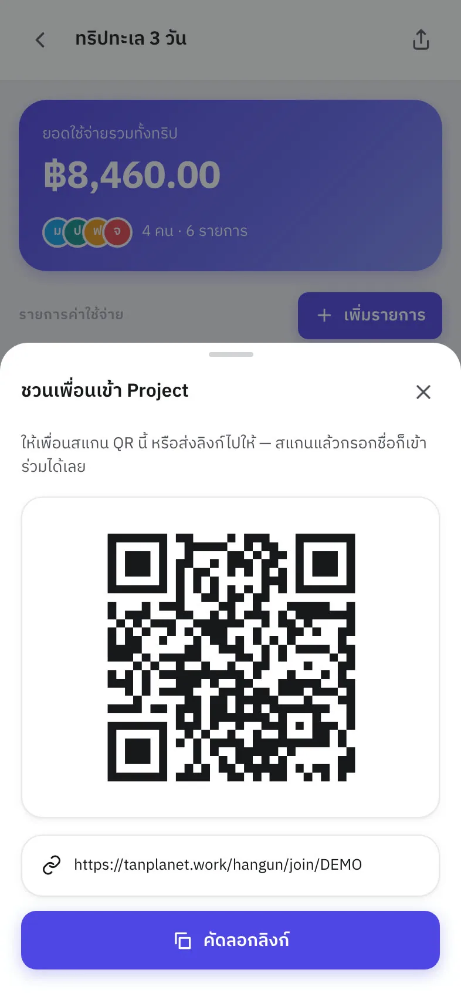
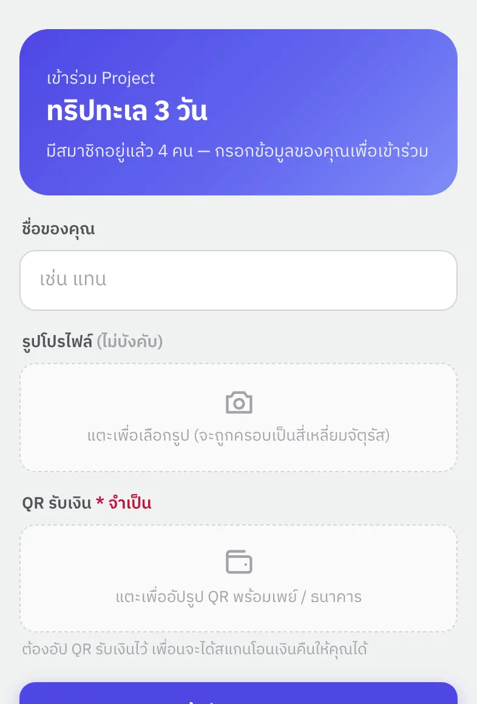
สร้าง Project
ตั้งชื่อทริป ทำโปรไฟล์ + อัป QR รับเงิน
ชวนเพื่อน
แชร์ QR/ลิงก์ เพื่อนสแกนเข้าร่วมเอง
ลงบิล
ใครก็เพิ่มค่าใช้จ่ายได้ เลือกโหมดหาร
โอน + เคลียร์
ดูว่าต้องโอนใคร สแกนจ่าย กด "จ่ายแล้ว"
Tech Stack & Architecture
Next.js 16 + Supabase — stack ที่คนเดียวก็ดูแลได้ทั้งระบบ
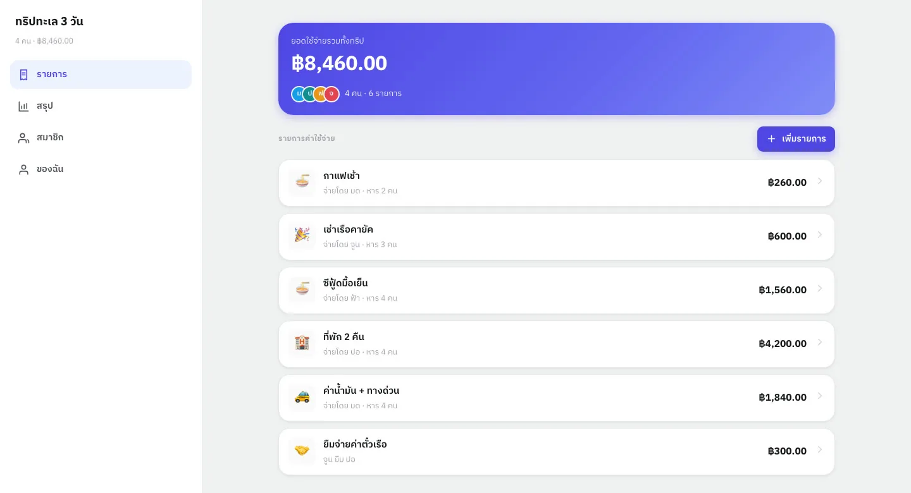
Next.js Server Actions ตัดชั้น REST API ทิ้งทั้งชั้น — เขียน mutation เป็นฟังก์ชัน TypeScript ธรรมดาที่เรียกจาก client ได้ตรง ๆ · Supabase รวม Postgres + Storage สำหรับเก็บรูปโปรไฟล์/QR ไว้ที่เดียว ไม่ต้องตั้ง backend เอง · Vercel deploy จาก git push — ผลคือ full-stack app ที่คนเดียวสร้างและดูแลได้ตั้งแต่ DB ถึง production
สิ่งที่สร้าง — 8 ฟีเจอร์หลัก
ครบ loop ตั้งแต่สร้างทริปถึงเคลียร์เงินกันจบ
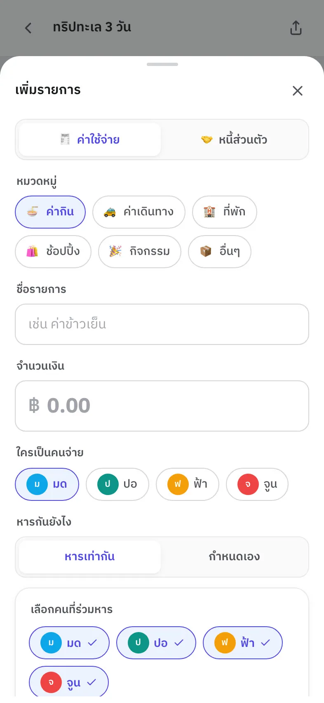
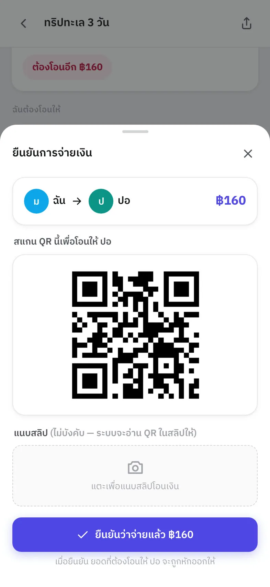
สร้าง & เข้าร่วม Project
เปิดทริปแล้วได้ QR/ลิงก์ เพื่อนสแกนเข้าร่วมได้เอง — no-login ทั้งหมด
โปรไฟล์ + QR รับเงิน
ทุกคนตั้งชื่อ ใส่รูป และอัป QR พร้อมเพย์ (บังคับ) เพื่อนจะได้สแกนโอนคืนได้
บันทึกค่าใช้จ่าย 3 โหมด
หารเท่ากัน / กำหนดเองรายคน / หนี้ส่วนตัว — มีหมวดหมู่ + รูปสลิปประกอบ
สรุปยอดต่อคน
แต่ละคนเห็นชัดว่าจ่ายไปเท่าไหร่ ต้องจ่ายเท่าไหร่ และยอดสุทธิติดลบ/บวก
Transfer Matrix
ตารางใครโอนใคร สลับดูยอดดิบ/หักลบ พร้อมปุ่มลัดไปจ่ายเงิน
จ่ายแล้ว (Settle)
กดยืนยันการโอน แนบสลิปได้ ยอดที่ค้างถูกหักออกจากการคำนวณทันที
อ่าน QR ในสลิป
อัปสลิปปุ๊บ ระบบสแกน QR ในรูปด้วย jsQR ดึงเลขอ้างอิงการโอนมาเก็บเป็นหลักฐาน
สิทธิ์เจ้าของ Project
เจ้าของลบสมาชิกหรือลบทั้ง Project ได้ ยืนยันตัวด้วย owner token ลับในเครื่อง
Hack กับปัญหา
6 โจทย์เทคนิคที่ต้องคิดทางแก้เอง ไม่มีใน playbook
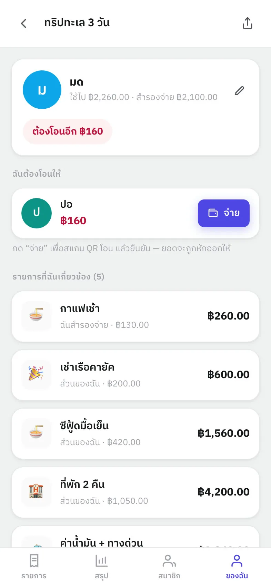
ลดทอนหนี้ให้โอนน้อยครั้งที่สุด
ถ้าแสดงหนี้ดิบ ทุกคู่ที่ติดกันต้องโอนหากันหมด — A→B, B→C, C→A วุ่นวายและเสียค่าธรรมเนียมโอนเกินจำเป็น
simplifyDebts() ใช้ greedy min-cash-flow — จับคนยอดบวกสูงสุดไปเจอคนยอดลบสูงสุดทีละคู่ จนหนี้หมด เหลือจำนวนการโอนน้อยที่สุดที่ทุกคนยังเคลียร์กันครบหารแล้วเศษสตางค์ต้องไม่หาย
หาร 100 บาท / 3 คน = 33.33 × 3 = 99.99 — หายไป 1 สตางค์ ยอดรวมไม่ตรงบิล พอสะสมหลายรายการก็เพี้ยน
splitEqual() แบบ satang-exact — คำนวณเป็นจำนวนสตางค์เต็ม แล้วกระจายเศษที่เหลือทีละสตางค์ให้คนแรก ๆ ผลรวมของส่วนแบ่งเท่ากับยอดบิลเป๊ะทุกครั้งNo-login แต่ยังต้องรู้ว่าใครเป็นใคร
ไม่มีระบบสมาชิก แล้วจะแยกเจ้าของออกจากสมาชิกทั่วไป และจำได้ว่าเครื่องนี้คือใคร ได้ยังไง?
join_code เป็น public token ใน QR/ลิงก์ให้ใครก็เข้าร่วมได้ ส่วน owner_token เป็น secret เก็บใน localStorage ของเจ้าของเท่านั้น ตัวตนสมาชิกผูกกับเครื่องผ่าน localStorage — เปิดเว็บมาก็เข้าทริปเดิมได้เลยรูปจากมือถือชน Server Action 1MB limit
ตอนชวนเพื่อนเข้าร่วม รูปโปรไฟล์/QR จากกล้องมือถือมักโต 3–8MB — ทะลุลิมิต body ของ Server Action เด้ง error ทันที
compressImage() ย่อรูปฝั่ง client ด้วย canvas ก่อนส่ง (3.1MB → ~98KB) สลับไฟล์ใน input ผ่าน DataTransfer + ดัน bodySizeLimit เป็น 8MB เป็น headroomอ่าน QR ในสลิปโอนเงินอัตโนมัติ
อยากให้สลิปเป็นหลักฐานที่ตรวจสอบได้ ไม่ใช่แค่รูปภาพเฉย ๆ ที่ใครจะแนบรูปอะไรก็ได้
jsQR บน canvas (อ่านจากไฟล์ต้นฉบับที่คมที่สุดก่อนค่อยบีบอัด) ดึงเลขอ้างอิงการโอนเก็บคู่กับ settlementMobile-first ที่ทำพลาดแล้วแก้
เขียน layout หลักไว้ใน min-width media query — desktop ดูดี แต่บนมือถือ content ชนขอบจอ tab bar ไม่ติดล่าง
จาก Prototype สู่ Production
เริ่มจาก HTML ไฟล์เดียว — พิสูจน์ flow ก่อนลงทุนกับ stack จริง
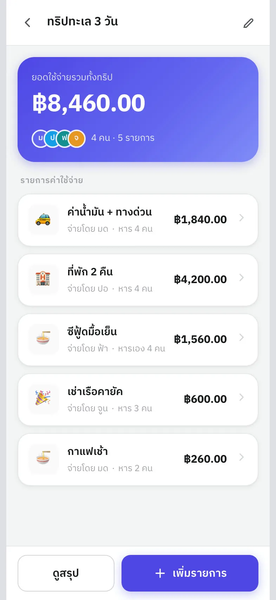
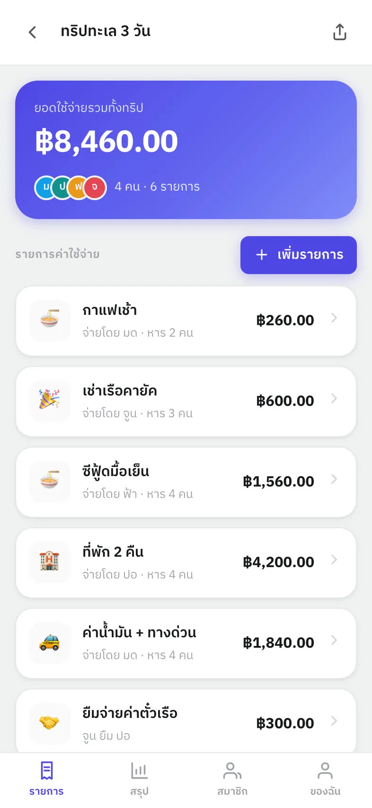
HanGun ไม่ได้เริ่มจากการเปิด Next.js — แต่เริ่มจาก HTML ไฟล์เดียวที่รัน React ผ่าน CDN เพื่อทดสอบว่า user flow และสูตรคำนวณ Transfer Matrix ใช้ได้จริงไหม พอมั่นใจว่าโจทย์ถูก ค่อย rebuild เป็น full-stack app
Prototype First
HTML ไฟล์เดียว ทดสอบ flow + สูตรคำนวณ
Solo Build
ออกแบบ + เขียนโค้ด + deploy คนเดียวจบ
AI-Augmented
สร้างร่วมกับ Claude Code ตั้งแต่ดีไซน์ถึงดีพลอย
Live in Production
ใช้งานจริงที่ tanplanet.work/hangun
เราได้อะไรจากโปรเจกต์นี้
4 บทเรียนจากการทำ HanGun ตั้งแต่ต้นจนถึง production
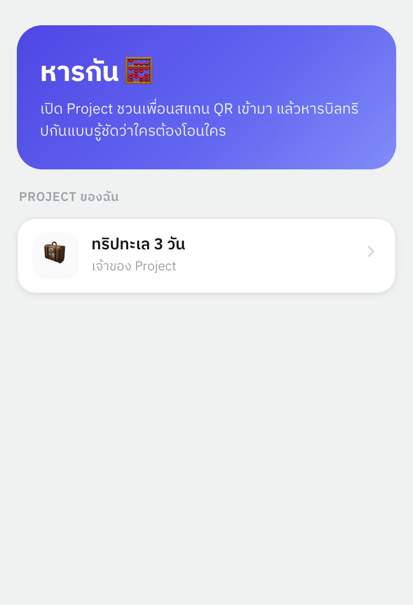
การเริ่มจาก HTML ไฟล์เดียวทำให้รู้เร็วว่า Transfer Matrix แบบ "ดิบ vs หักลบ" คือสิ่งที่ user ต้องการจริง — ถ้ากระโดดไปเขียน Next.js + DB ตั้งแต่แรก จะเสียเวลาไปกับ infra ก่อนที่จะรู้ว่าโจทย์ถูกหรือเปล่า
lib/engine.ts เป็น pure function ล้วน ไม่ผูกกับ React หรือ DB — รับ input ได้ output เดิมเสมอ ทำให้สูตรหารเงิน/ลดทอนหนี้ทดสอบง่ายและมั่นใจได้ ส่วน UI แค่เรียกใช้ ความถูกต้องของเงินไม่ปนกับเรื่องการแสดงผล
โจทย์ที่แท้จริงคือ "ทำยังไงให้เพื่อนทุกคนเข้าร่วมได้" — คำตอบไม่ใช่ระบบสมาชิกที่ดีขึ้น แต่คือ no-login model: สแกน QR แล้วเข้าได้เลย UX ที่ดีหลายครั้งคือการตัดสิ่งที่ไม่จำเป็นออก
บั๊ก responsive ที่เจอสอนชัดว่า "mobile-first" ไม่ใช่แค่คำพูด — ถ้าเขียน layout หลักไว้ใน min-width media query เท่ากับออกแบบ desktop ก่อนโดยไม่รู้ตัว ต้องวาง base layout ที่ 390px ให้สมบูรณ์ แล้วค่อยขยายขึ้น